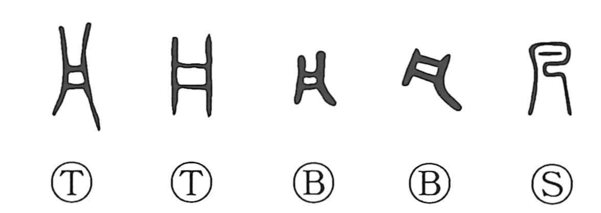

凡

Kun: oyoso, subete | On: bon, han
all ・ everything ・ ordinary ・ mediocre ・ general
Explanation
A pictograph of a shallow tub or tray, a shape that early writings sometimes rendered with the boat-like form 舟 or reduced to the compact outline of 凡. Its original on reading han is preserved in derivatives such as 汎 (wide, to float on) and 帆 (sail). In oracle-bone and bronze script, graphs like 風 (wind) appear as a crested bird, the same motif as the original 鳳 (phoenix); within these, 凡 serves as the on-phonetic. Already in bronze inscriptions 凡 is used adverbially for “all, wholly,” as in 凡て “everything.” Later it came to mean “ordinary, average,” as seen in 凡才 (mediocre ability), 凡人/凡夫 (ordinary person), 非凡 (extraordinary), 平凡 (commonplace), and in 凡例, the guide listing a book’s conventions at its opening.